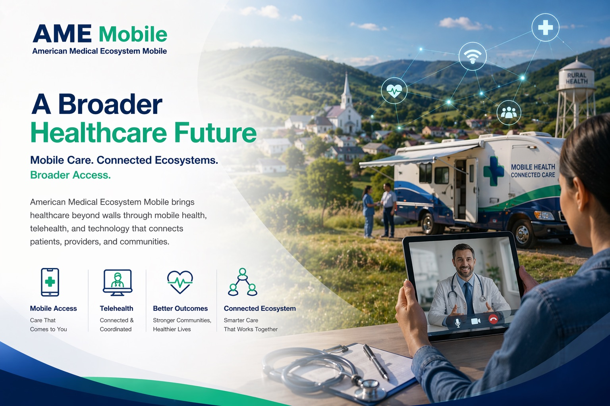

Rural Care Journey (RCJ) follows what is happening in the Rural Health Transformation Program — RHTP grants, awards, deadlines, state activity, and vendors — grounded in public sources and the people shaping rural care across America.
Figures as of October 14, 2026 · live totals on Rural Care Journey
Why Rural Care Journey
Rural Care Journey · A research tool by AME Mobile

Rural Care Journey helps people make sense of a fast-moving rural health landscape: what states are planning, where funding is available, which organizations are involved, and what is changing next.
Built by AME Mobile, RCJ turns public-source activity into a practical starting point for applicants, vendors, researchers, implementation partners, and rural communities.
What’s Inside RCJ
Find open, upcoming, and recently closed rural health funding opportunities with the context needed to act.
Review opportunity requirements, build a draft application package, and prepare for expert review in one place.
Connect rural health organizations with vendors and partners aligned to real program needs and implementation goals.
Search public program documents, guidance, awards, reports, and state activity as the landscape develops.
Follow daily changes, practical guides, events, and conversations with people working on rural care transformation.
The Problem RCJ Solves
Rural Care Journey addresses this by bringing public-source intelligence, practical tools, and a growing community into one navigable place — so the people doing the work can spend less time searching and more time moving forward.
Rural Care Journey
CMS sets federal policy for the Rural Health Transformation Program. Rural Care Journey follows what happens next: how each state implements its program, which RHTP grants and opportunities are open, and where RHTP awards are going — with each record linked to its public source.
Rural health
tracker & intelligence
Explore state programs, project narratives, grant opportunities, award announcements, and daily updates across all 50 states.
Figures as of Oct 14, 2026 · Not affiliated with HRSA or CMS · For research use
RHTP, by question
RHTP grants & opportunitiesOpen RFAs, RFPs, NOFOs, and grants by state RHTP deadlinesOpportunities closing in the next 7, 14, and 30 days RHTP awardsFunded projects and award announcements by state RHTP by stateImplementation phase, opportunities, and awards for all 50 states RHTP vendorsTelehealth, workforce, and technology implementation partnersFrom the RCJ Community
Read a community testimonial about the experience of using Rural Care Journey to follow rural health transformation, opportunities, and implementation activity.
Rural Care Journey Community
Read the testimonial →Why It Matters
01
Care that moves into communities — not waiting for communities to come to it.
02
Patients followed through every stage of their journey, from screening to sustained care.
03
Systems that talk to each other — and people who know how to make them work together.
04
Digital tools with real workflow value, not just platforms deployed and left behind.
05
Models built to sustain — financially, operationally, and in the communities they serve.
06
Every service, tool, and partnership designed as part of a connected whole — not isolated parts.
RCJ FAQ
Rural Care Journey (RCJ) is AME Mobile’s research and intelligence platform for the Rural Health Transformation Program (RHTP). It brings together rural health funding opportunities, state programs, public documents, vendors, and community updates in one place.
The Rural Health Transformation Program is a $50 billion federal investment, administered by CMS, to strengthen sustainable access to care in rural America. Funding flows from CMS to states, which run their own programs and release funding opportunities to rural providers and partners. RCJ tracks that state-level activity across all 50 states — see how RHTP funding flows from CMS to communities.
Rural Care Journey lists open RHTP grants and opportunities, RHTP deadlines closing soon, RHTP awards and funded projects, and RHTP activity by state, each linked to the underlying public record.
RCJ is built for grant applicants, rural hospitals and clinics, vendors, researchers, implementation partners, and rural communities who need a practical starting point for rural health transformation activity.
RCJ is updated daily from public sources, including state Flex Program offices, federal agencies, funding announcements, awards, and published program documents.
No. Rural Care Journey is an independent research tool built by AME Mobile. It is not affiliated with HRSA or CMS and is intended for research use.
Go Further With RCJ
Explore Rural Care Journey for opportunities, documents, state activity, vendor connections, applicant tools, and the people shaping what comes next.
Research · Intelligence · Action
info@amemobile.net